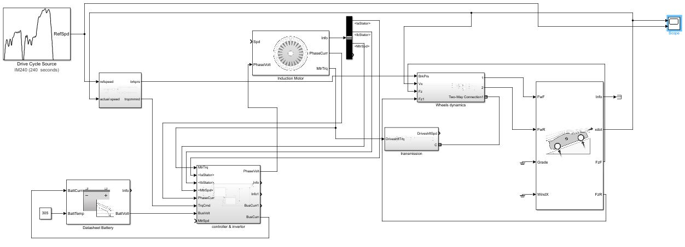
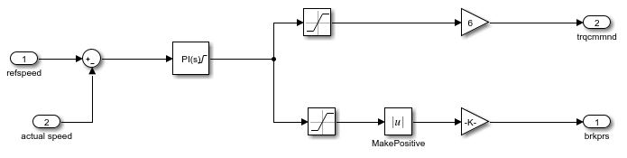
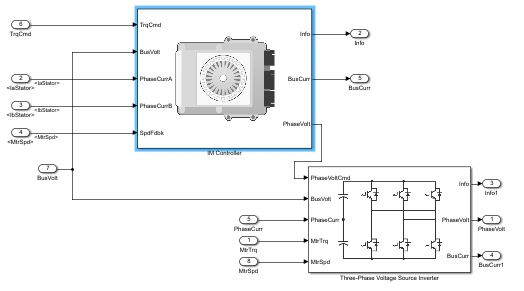
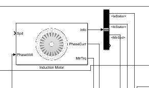
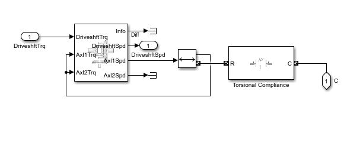
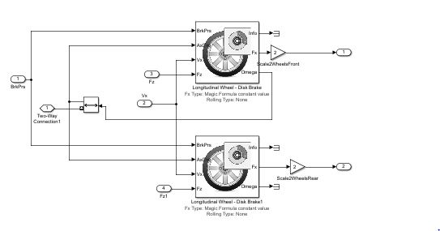
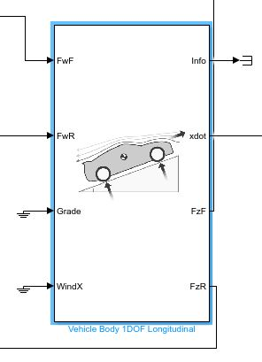
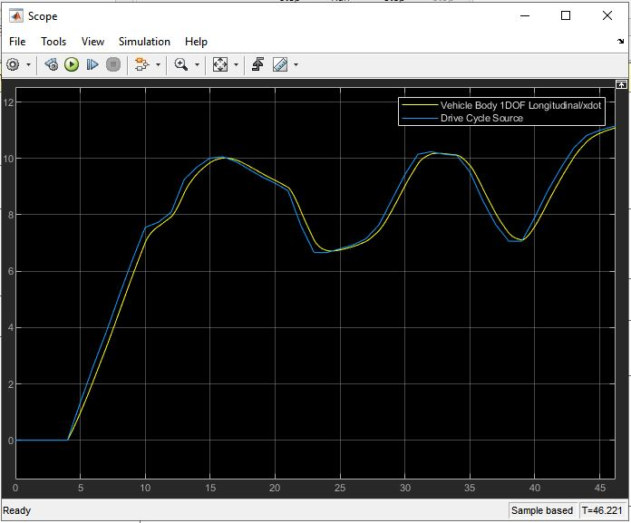

Electric vehicle Power Train development
The aim of this project is to simulate the Induction motor powered drive train of an Electric vehicle. In this project blocks from Powertrain Block set are used which include Induction motor, IM controller, Three phase voltage source and vehicle body. To control the speed of the vehicle, The direct torque control stratergy is used. It is similar to field oriented control, in that it decouples torque and flux and controls them independently. DTC controls motor torque directly, without a modulator, so torque response is much faster. Direct torque control uses two control loops — a speed control loop and a torque control loop — that work together, along with an advanced motor model, to precisely predict stator flux and motor torque.
Torque & Brake command generation
This makes a outer closed loop which is a speed loop. A PID controller generates the torque and brake command based on the error between the reference speed which is obtained from drive cycle source and the actual vehicle speed which is obtained from 1 DOF vehicle body block.
Invertor, Controller and IM motor
 The torque command generated from the outer closed loop is fed into the IM controller which works in a inner closed loop torque control with IM motor. IM controller is allready provided as a block in Power Train blokset. IM controller sends phase voltage signal to Invertor voltage source which in turn produces the phase voltage and current that controls the torque output of the motor.
Wheel and differentional dynamics
 To simulate the differention dynamics The Open Differential block is used which implements a differential as a planetary bevel gear train. The block matches the driveshaft bevel gear to the crown (ring) bevel gear. The Torsional Compliance block implements a parallel spring-damper to couple two rotating driveshafts, the output is a axial torque to wheels. Wheel dynamics block represents wheel longitudinal and brakes dynamics and outputs longitudinal forces on axle.
Vehicle body
Vehicle Body 1DOF Longitudinal block implements a one degree-of-freedom (1DOF) rigid vehicle body with constant mass undergoing longitudinal motion. The block outputs normal forces on the axle which is used by the wheel block. The velocity output from this block is the variable which is controlled using two closed loops that is an inner torque loop and outer speed loop.
Results
The aim is that the inner torque closed loop and outer speed closed loop should work together in such a way that the reference speed matches with the vehicle actual velocity. From the graph it can be seen that the vehicle actual velocity profile (yellow) closely matches the reference speed (blue), hence both the control loops are working fine with good and smooth response.